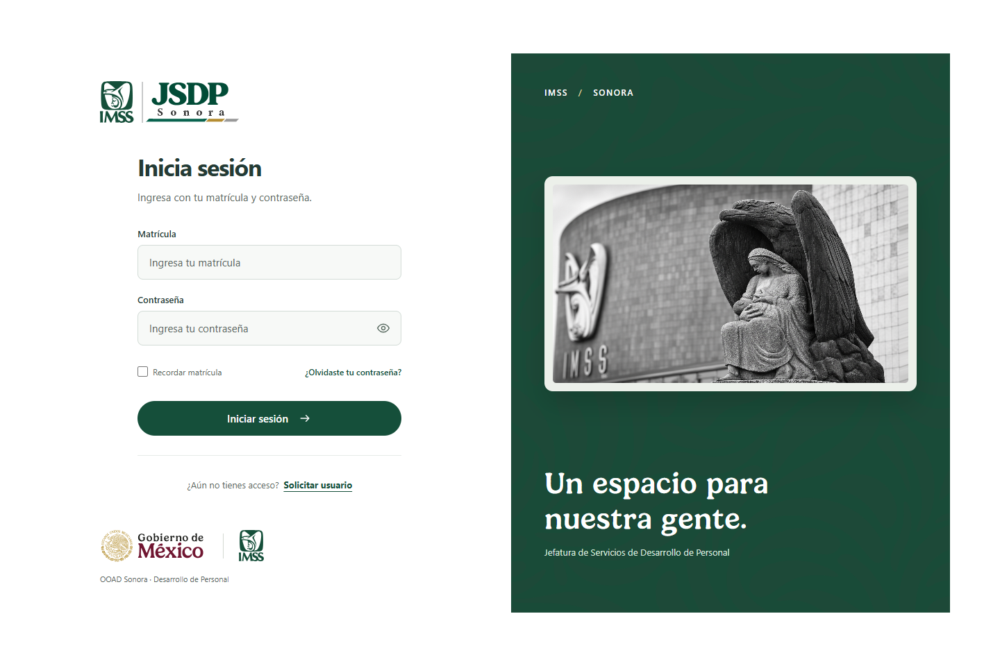
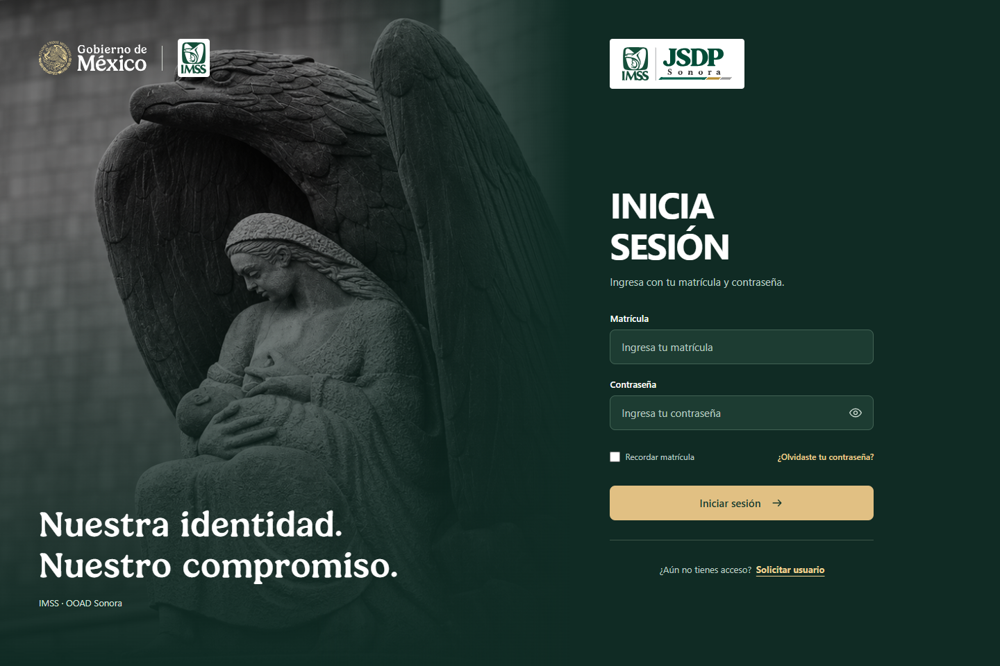
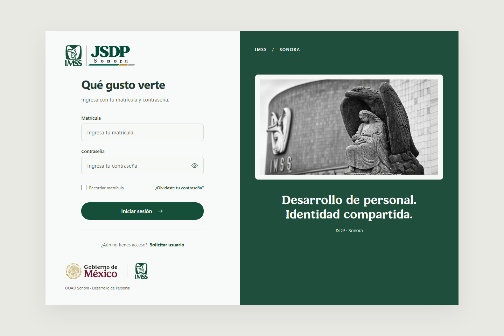
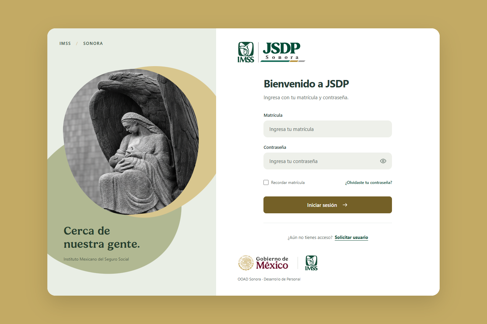
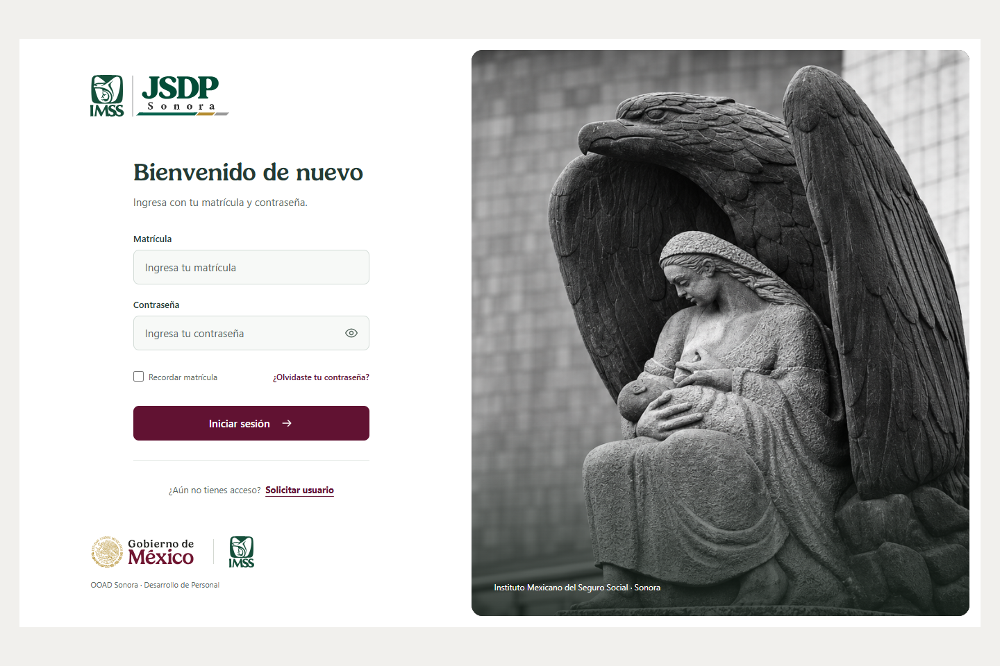
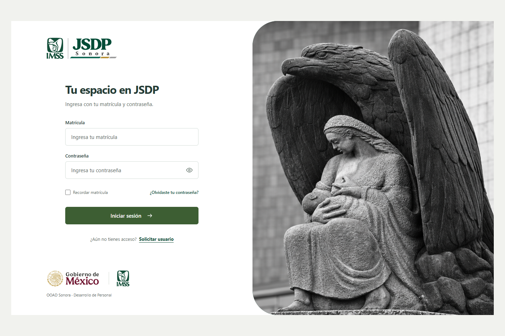
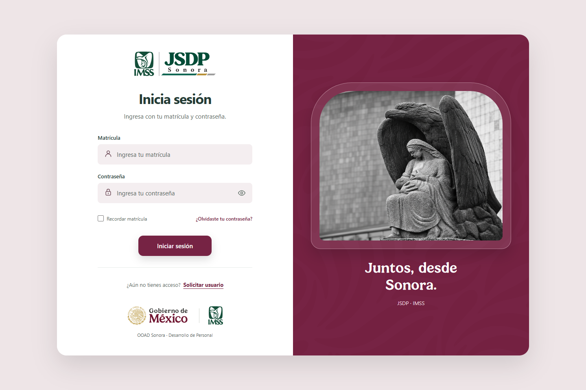
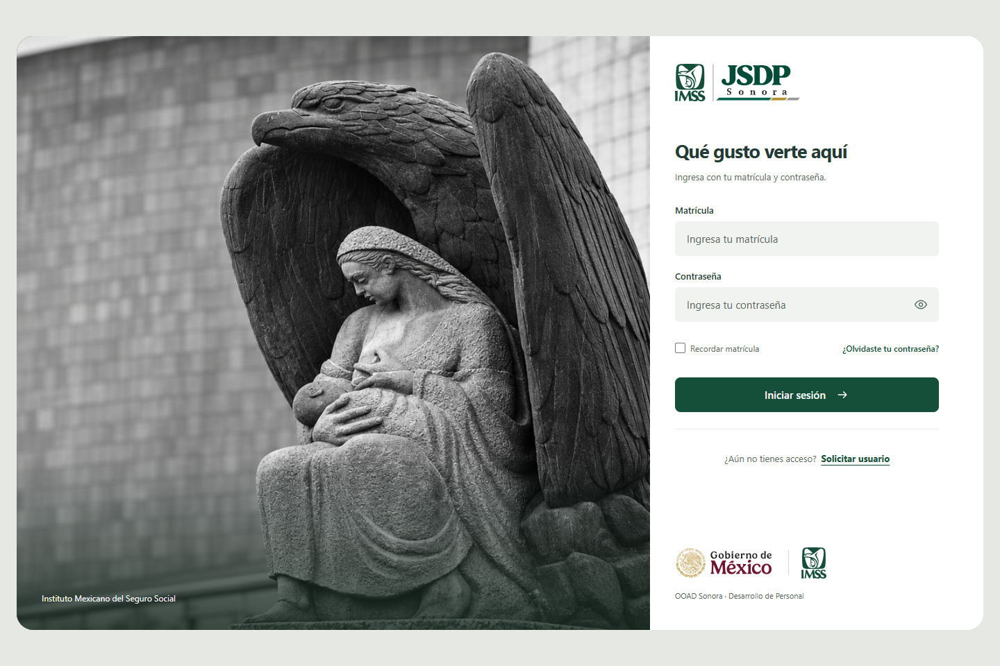
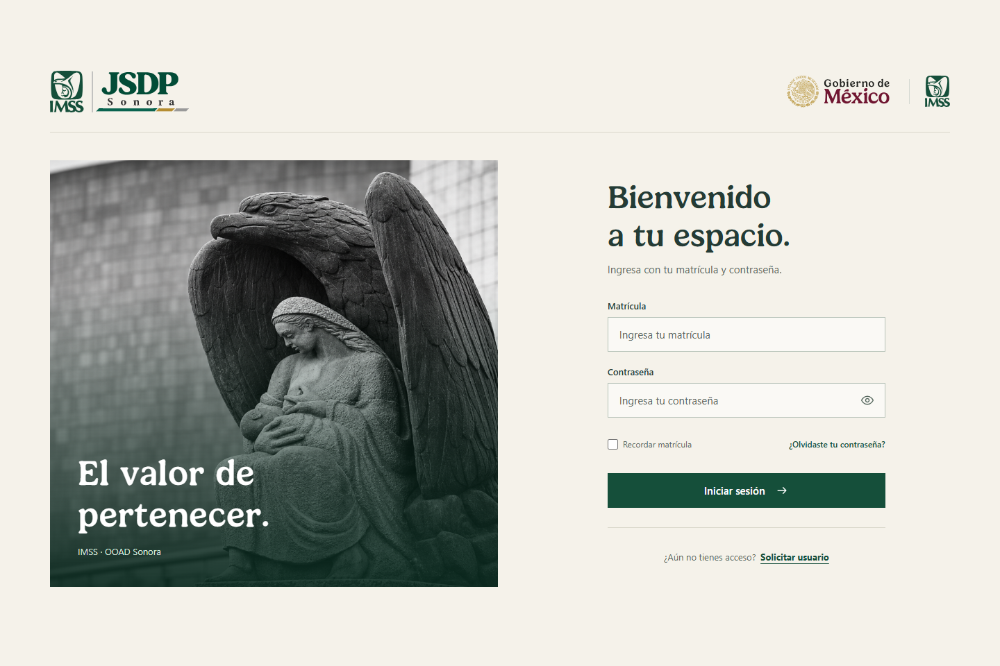
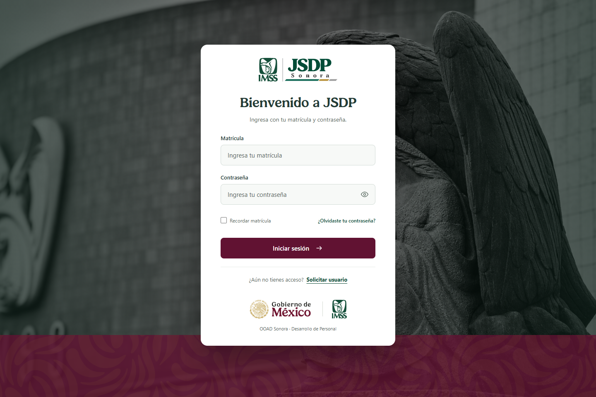

01
Aire institucional
Referencia 1 · Solara, composición abierta
Formulario sobre blanco y panel verde independiente. La escultura se presenta como una pieza enmarcada, con espacio y jerarquía serena.
Propuestas de inicio de sesión para JSDP Sonora. Ocho composiciones a partir de tus referencias y dos variaciones para explorar otras posibilidades.
Logotipos originales, escultura del IMSS, matrícula y contraseña. Abre cada propuesta para explorar su diseño adaptable.
Prototipos visuales: el acceso y la solicitud de usuario aún no están habilitados.
Ver las diez propuestas en una sola imagen

Referencia 1 · Solara, composición abierta
Formulario sobre blanco y panel verde independiente. La escultura se presenta como una pieza enmarcada, con espacio y jerarquía serena.

Referencia 2 · Universo oscuro
Fotografía inmersiva a la izquierda y acceso oscuro a la derecha. Verde profundo, contraste dorado y una composición de gran presencia.

Referencia 3 · Solara, tarjeta dividida
Una tarjeta central contiene dos mitades equilibradas. Fondo perla, formulario suave y fotografía contenida sobre verde institucional.

Referencia 4 · Globo y formas orgánicas
Tarjeta clara sobre un fondo ocre. La escultura ocupa un recorte ovalado entre formas suaves; el formulario se sitúa a la derecha.

Referencia 5 · Fotografía floral enmarcada
Formulario íntimo y fotografía vertical con bordes suaves. Mucho blanco, acento guinda y tratamiento editorial de la imagen.

Referencia 6 · Hojas a sangre
Acceso mínimo a la izquierda e imagen amplia hasta el borde derecho. Esquinas asimétricas y acentos verdes para una experiencia ligera.

Referencia 7 · Panel violeta y cristal
Panel guinda con textura institucional y un marco translúcido para la escultura. Formulario centrado y fondo rosa mineral.

Referencia 8 · Faro y formulario lateral
La fotografía ocupa dos tercios de la página. El acceso se concentra en una columna lateral blanca, directa y compacta.

Variación · Referencias 5 + 8
Cabecera institucional común, fotografía panorámica y formulario editorial. Crema, verde y tipografía Patria articulan una entrada sobria.

Variación · Referencias 2 + 7
La escultura se extiende a todo el fondo. Una tarjeta clara concentra el acceso en el centro, con una franja inferior de identidad institucional.
Numeración según el orden de los ocho adjuntos. Las imágenes 1 y 3 comparten lenguaje Solara: la primera se interpreta como composición abierta y la tercera como tarjeta enmarcada.
Las referencias orientan la distribución, las proporciones y el tratamiento de la imagen. Los colores, las marcas y el contenido se adaptan a JSDP. Se sustituyen los accesos sociales y el registro por «Solicitar usuario».